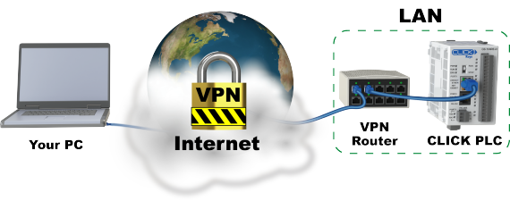

Topic: CL201

| Connect to CLICK PLC (Ethernet): Outside this LAN |
Topic: CL201
|
If you select the Outside this LAN option under the Location of the target CLICK PLC, you can connect the CLICK programming software to the CLICK PLC from the outside of the LAN like connecting via the Ethernet. In the case, there are two possible methods:


To endure the maximum security with your access to the target CLICK PLC via the Internet, we recommend that you use VPN. The target CLICK PLC needs to be in the same subnet with the VPN router in the LAN. Please consult the user manual of the VPN router you use for the setup.

|
Note: You must establish the VPN connection from your PC to the VPN router before starting the CLICK Programming Software.
Note: You must still use the ‘Outside this LAN’ option when connected through VPN. The CLICK Programming Software cannot automatically browse through a VPN connection. |
|


www.AutomationDirect.com/VID-CL-0030
If your router supports the Port Forwarding feature, your PC can access to the target CLICK PLC located in the same subnet of the LAN with the router. See How to use Port Forwarding for details.

1 Port Type: Select the Port Type of the communication port on your PC to connect to the target CLICK CPU Module.
2 Network Adapter: Select the Network Adapter installed on your PCor the VPN (Virtual Private Network) connection if you are going to use the VPN to connect to the CLICK PLC.
|
|
Note: If you use the VPN, you must establish the VPN connection first. If not, you wouldn’t see the VPN connection in the list. |
|
3 Location of the Target CLICK PLC: There are two choices.
| In the same LAN | Select this option if the target CLICK PLC locates in the same LAN. |
| Outside this LAN | Select this option if the target CLICK PLC locates outside this LAN or you want to access to the target CLICK PLC via Internet. |
|
|
Note: You must still use the ‘Outside this LAN’ option when connected through VPN. The CLICK Programming Software cannot automatically browse through a VPN connection. |
|
4 List of Links: This list displays the links that were registered before.
5 Add: By clicking this button, the Add window to Add a new link to the list opens.
6 Edit: After selecting a link in the above list, click this button to open the Edit window.
7 Delete: After selecting a link in the above list, you can Delete the link by clicking this button.
In this window, you can configure the link to a CLICK PLC located in another LAN.

1 Link Name: Enter a Name to distinguish each link.
2 IP Address: If you are going to use the VPN to connect to the CLICK PLC, enter the IP Address of the Ethernet Port on the CLICK PLC. In the case, please make sure the Port Number is 25425. If you are using the Port Forwarding to connect to the CLICK PLC, enter the IP Address of the router. See How to Use the Port Forwarding for details.
3 Port Number: The default Port Number is 25425. Use this number if you are going to use the VPN to connect to the CLICK PLC. If you are using the Port Forwarding to connect to the CLICK PLC, you would need to enter a different number. See How to Use the Port Forwarding for details.
4 Timeout: Specify the Time Interval to wait for a response from the CLICK PLC. The default Timeout is 3 sec.
5 Retries: Specify the number of Times to try to connect to the CLICK PLC. The default number of Retries is 3.
In this window, you can Edit the existing link.

1 Link Name: Enter a Name to distinguish each link.
2 IP Address: If you are going to use the VPN to connect to the CLICK PLC, enter the IP Address of the Ethernet Port on the CLICK PLC. In the case, please make sure the Port Number is 25425. If you are using the Port Forwarding to connect to the CLICK PLC, enter the IP Address of the router. See How to Use the Port Forwarding for details.
3 Port Number: The default Port Number is 25425. Use this number if you are going to use the VPN to connect to the CLICK PLC. If you are using the Port Forwarding to connect to the CLICK PLC, you would need to enter a different number. See How to Use the Port Forwarding for details.
4 Timeout: Specify the Time Interval to wait for a response from the CLICK PLC. The default Timeout is 3 sec.
5 Retries: Specify the number of Times to try to connect to the CLICK PLC. The default number of Retries is 3.